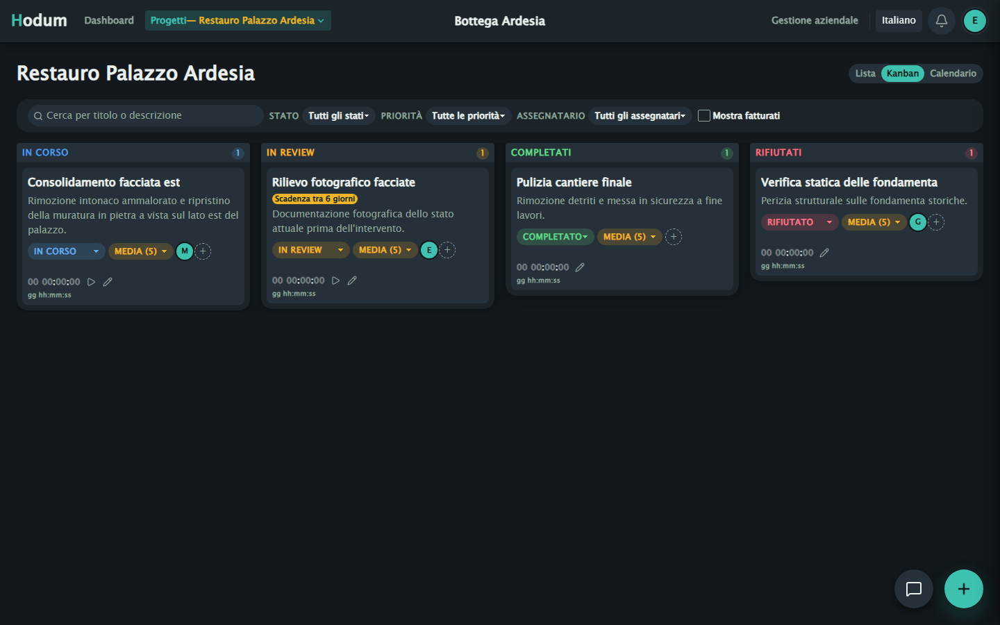
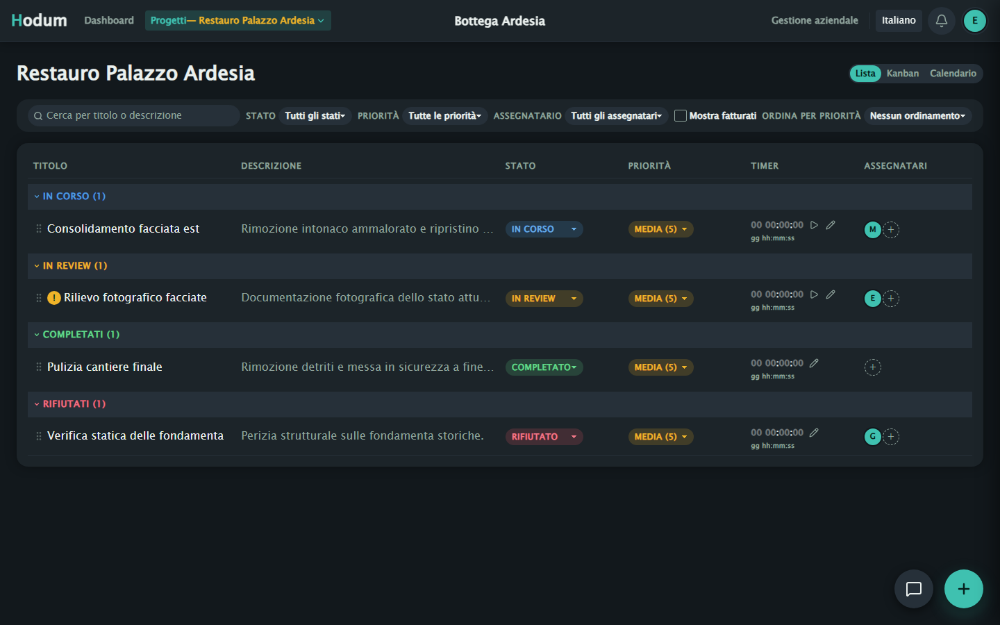
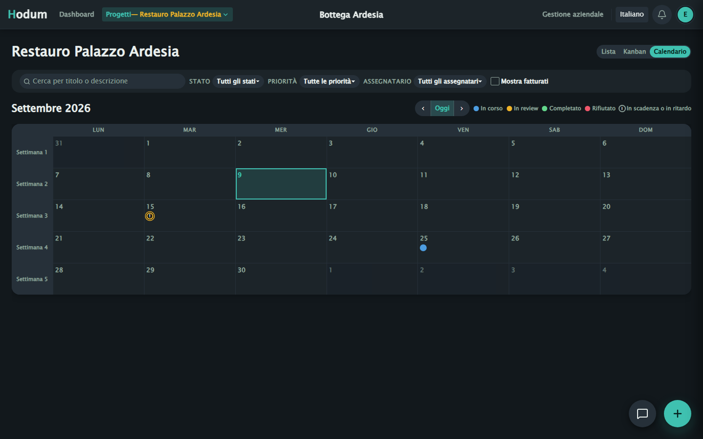
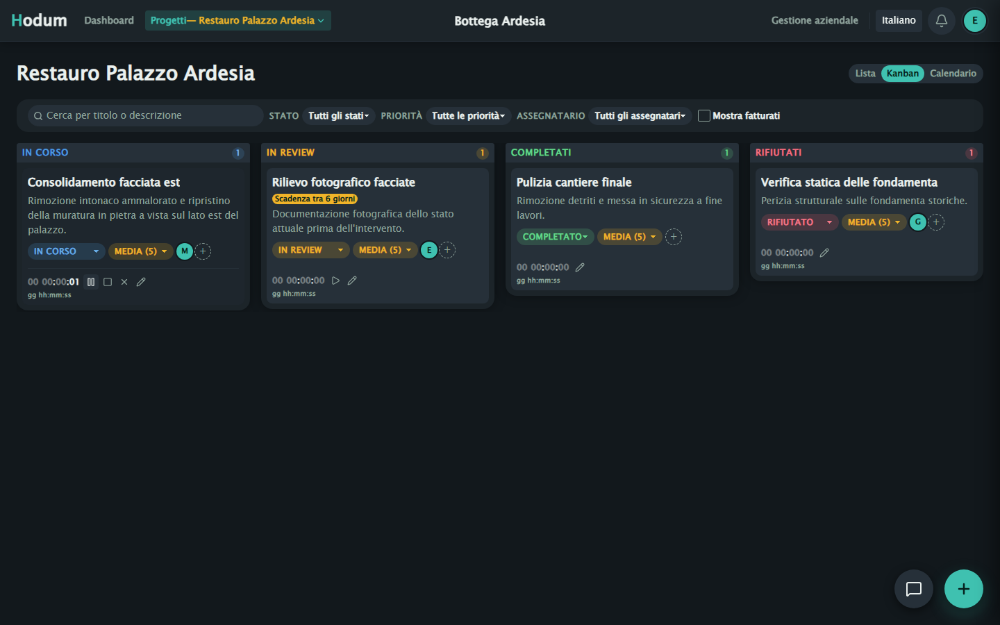
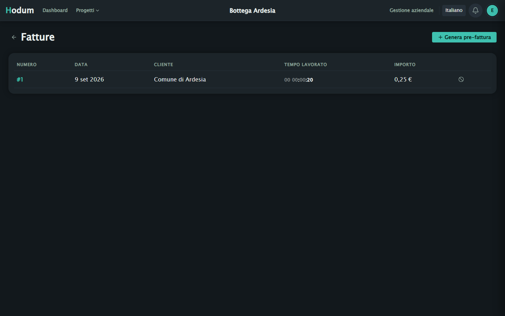
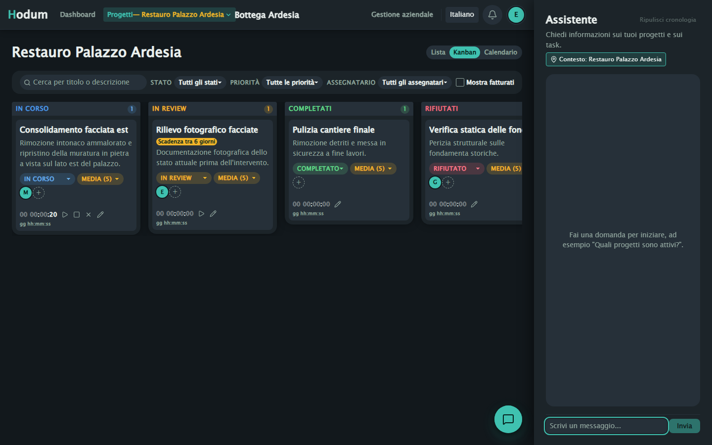
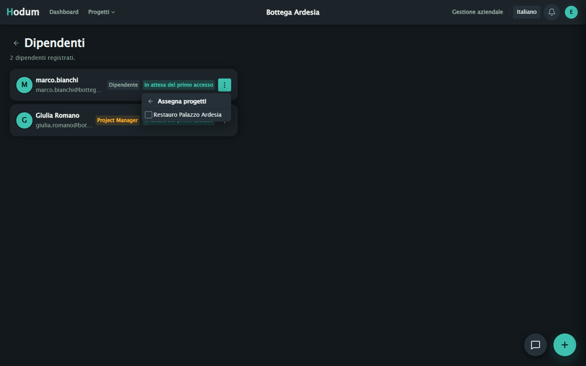

Gestisci progetti, tempo e fatture senza affidare i dati a nessun cloud.
Hodum è un task manager pensato per piccoli studi e aziende: progetti, task, timer, fatturazione e un assistente AI che gira in locale — tutto installato sul tuo server, dentro la tua rete.
Progetto in sviluppo attivo — alcune funzionalità mancano ancora.

I dati restano in azienda
Nessun account su servizi terzi: il database vive sul tuo server, non su un cloud esterno.
Nessun abbonamento
Software libero: lo installi e lo usi, senza costo per utente o per progetto.
Pensato per la LAN/VPN
Gira on-prem: accesso da remoto tramite VPN aziendale, mai esposto direttamente su internet.
Open source verificabile
Licenza AGPL-3.0: puoi leggere, modificare e verificare esattamente cosa fa il software.
Tutto quello che serve per gestire un'azienda di progetti
Dalla creazione del task alla fattura, in un unico strumento.
Progetti & task
Vista lista, Kanban o calendario per ogni progetto, con stato, priorità e assegnatari.
Timer integrato
Traccia il tempo lavorato direttamente sul task, con correzioni manuali quando serve.
Pre-fatture automatiche
Genera pre-fatture a partire dal tempo lavorato sui task completati per un cliente.
Team & permessi
Dipendenti, project manager e owner, con ruoli e assegnazione progetti dedicati.
Assistente AI locale
Chat integrata che risponde su progetti e task, basata su un modello Ollama eseguito in locale.
Sync in tempo reale
Aggiornamenti condivisi via Socket.IO: chi lavora sullo stesso progetto vede le stesse modifiche.
Come si presenta, schermata per schermata
Screenshot reali dell'applicazione, non mockup.
Ogni task sotto controllo, raggruppato per stato
Filtra per priorità, assegnatario o stato di fatturazione; riordina per priorità quando serve decidere cosa fare prima.

Scadenze e carico di lavoro a colpo d'occhio
La vista mensile mostra lo stato dei task in scadenza, cosi non serve controllare progetto per progetto.

Il tempo lavorato si traccia da dentro il task
Avvia, ferma o correggi manualmente il timer di ogni task: è la base per generare la pre-fattura al cliente.

Dal tempo lavorato alla pre-fattura, in un click
Hodum somma le ore sui task completati di un cliente e genera una pre-fattura pronta da rivedere.

Fai domande sui tuoi progetti, in italiano
L'assistente gira su un modello Ollama locale: risponde su progetti e task senza inviare dati a un'API esterna.

Assegna progetti a chi li segue davvero
Ogni dipendente vede solo i progetti a cui è assegnato; i permessi seguono il ruolo (dipendente, project manager, owner).

Si installa sul tuo server, non nel cloud di qualcun altro
Docker Compose porta su Postgres, backend e frontend in un comando.
# valorizza POSTGRES_PASSWORD e JWT_SECRET cp .env.example .env docker compose up -d --build # frontend su http://localhost:8080 # backend su http://localhost:3000
- 1 Le migration del database si applicano da sole all'avvio del backend.
- 2 L'assistente AI usa Ollama in esecuzione sull'host: nessuna chiave API da configurare.
- 3 Pensato per restare dentro la rete aziendale: l'accesso da remoto passa da VPN, non da un indirizzo pubblico.
- 4 Per il dettaglio completo del setup, Docker o manuale, vedi il README del repository.
Requisiti minimi
Il task manager in sé gira comodo anche su hardware modesto: è l'assistente AI locale a richiedere qualche risorsa in più.
Server applicativo
Frontend + backend + PostgreSQL
- Node.jsversione 20 o superiore
- PostgreSQLun'istanza raggiungibile, anche su un altro host
- CPU / RAMun web server Node + Postgres tipico: 2 core e 2–4 GB RAM bastano
- Storagecresce con progetti/task nel tempo; si parte da pochi GB
Assistente AI (Ollama)
Solo per la chat integrata — il resto dell'app funziona anche senza
- qwen2.5:7b (default)~8 GB di RAM libera (o VRAM equivalente su GPU)
- Modelli più grandisupportabili via
OLLAMA_MODEL, ma nei nostri test non più affidabili sulle azioni eseguite — vedi la pagina per sviluppatori - Senza GPU dedicatal'inferenza gira su CPU: più lenta, ma funzionante
- Ollama non raggiungibilesolo la chat dell'assistente non risponde; progetti, task e fatture restano operativi
Valori indicativi per la quantizzazione Q4 di default di Ollama — verifica sempre la scheda del modello scelto su ollama.com prima di dimensionare l'hardware.
Stato del progetto: sviluppo attivo, non ancora completo
Hodum è usato e sviluppato attivamente, ma mancano ancora funzionalità e alcune parti sono destinate a cambiare. Distribuito sotto licenza AGPL-3.0-or-later: puoi usarlo, modificarlo e ridistribuirlo liberamente, anche a fini commerciali, a patto che ogni versione derivata resti open source con la stessa licenza.